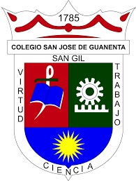
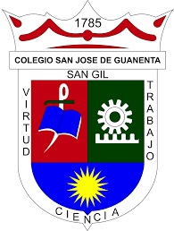

Esta página fue creada por el grupo 2 del grado 11-5, llamado “DarkNet” está conformado por un grupo de 4 estudiantes del colegio San Jose de Guanentá, Esta página duró 1 mes en ser creada, Fue algo complicado ya que es la primera vez que hacemos una pagina web de este tipo, pero nos sentimos satisfechos con lo que hemos logrado con nuestro poco conocimiento y exfuerzo
 

"Los programadores del futuro"